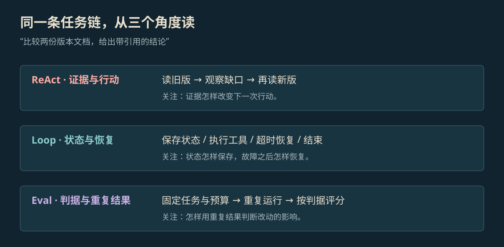

Agent 学习目录
从 Softmax 与 Attention 到 ReAct、任务运行、检索、记忆与评测，按技术主题查阅原理、公式、流程和代码。
同一个任务，三个观察角度

放大查看 ↗按卡住的位置找文章
发现模型使用了过期材料，可以从上下文工程、记忆与 Agentic RAG 查起。任务重复调用同一工具，则要检查 Loop 的状态、预算和退出条件。
Supervisor、Verify 与 Eval 的对比篇讨论三种职责怎样连接。评测综述讨论任务样本、评分器、环境与预算怎样共同影响一个成绩。
目录目前有 15 篇。每篇保留原始资料，图解与代码放在对应问题旁边；论文结果与本地小案例分开标注。